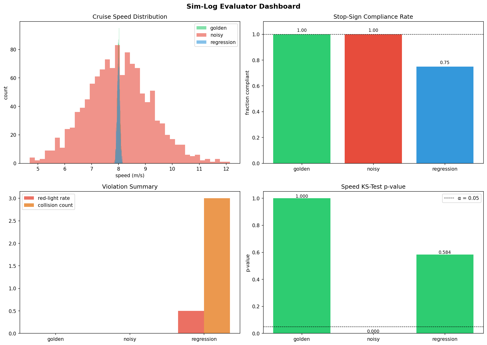
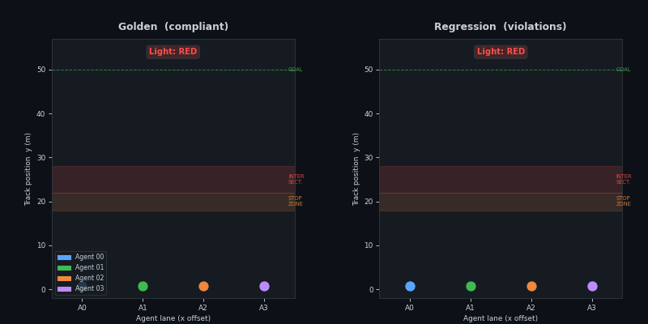
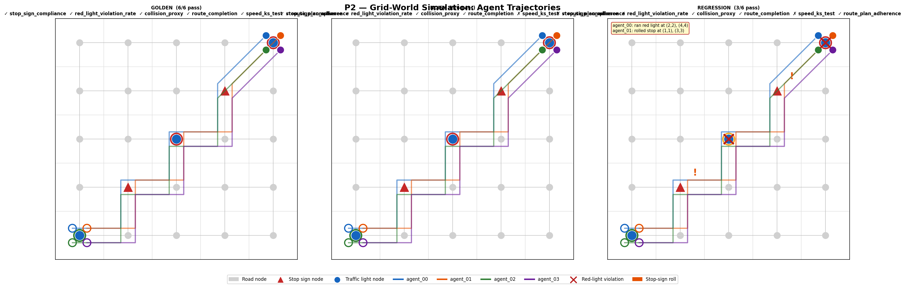
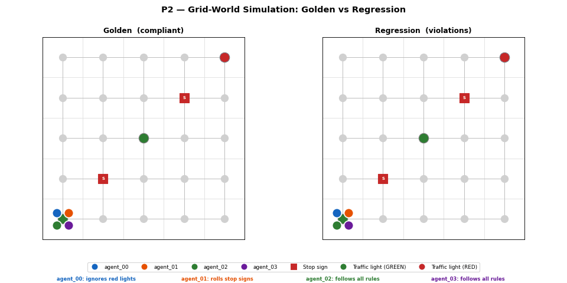
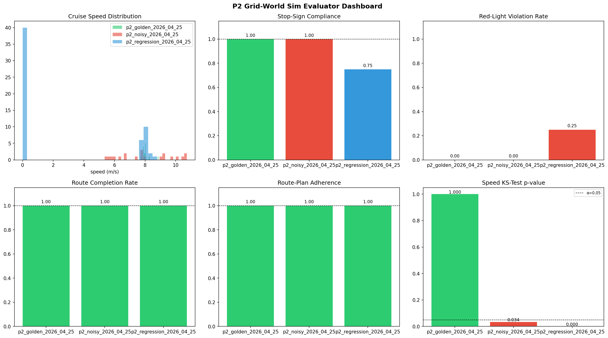
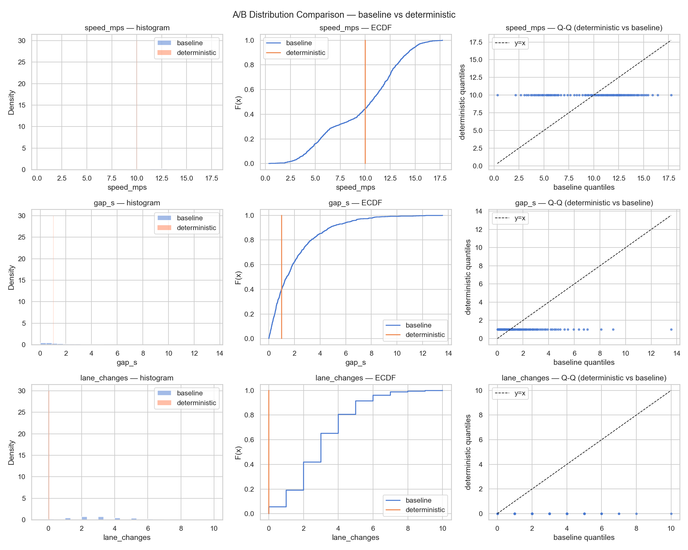
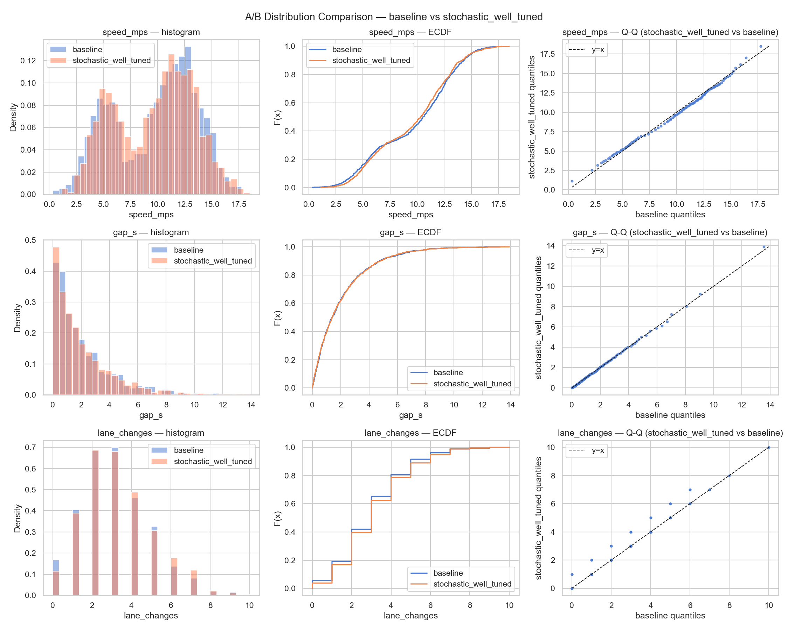
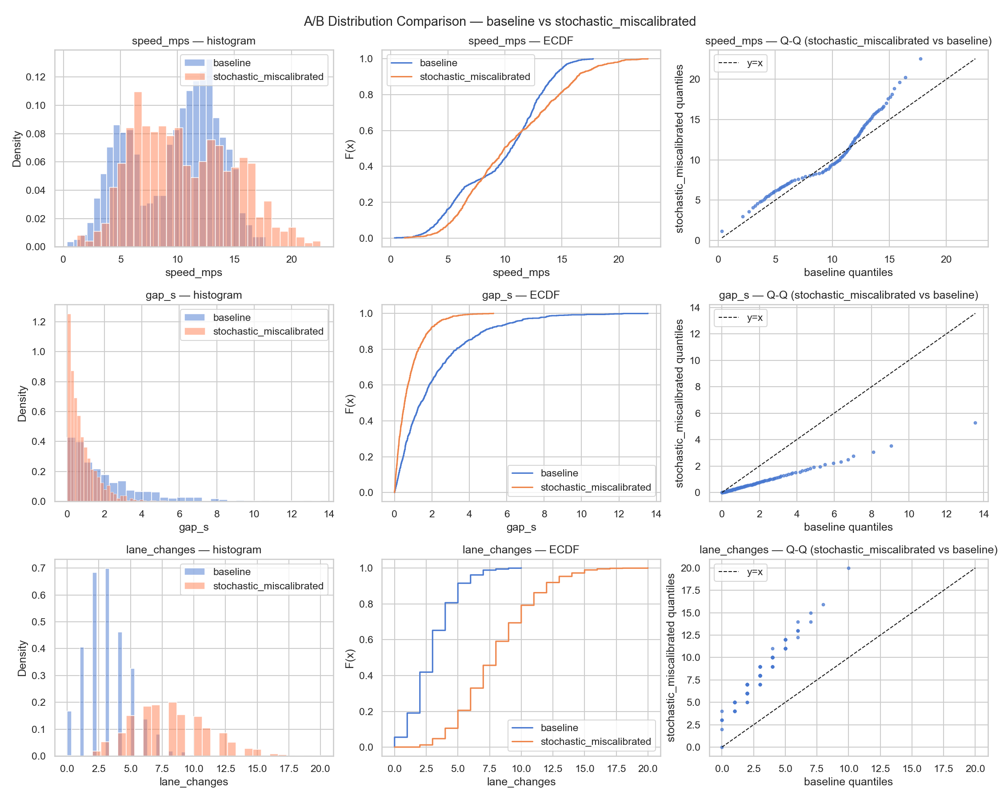

An automated evaluation framework for autonomous driving simulators — safety compliance, behavioural regression detection, and statistical fidelity testing.
View on GitHub Explore projectsSimulation is the primary scaling lever for AV safety testing. Before a simulator can be trusted, you need a repeatable, automated way to grade its output against a known-good baseline. Without it, regressions — agents that roll stop signs, run red lights, or drift in cruise-speed distribution — go undetected until they reach the real world. This project provides that harness: ingest logs, run metrics, get a verdict.
Ingests columnar driving logs, runs 5 pure metric functions, emits
metrics.json
+ a 4-panel dashboard PNG — answering whether the simulator did the right thing.
schema.py is the single source of truth for map geometry — metric logic never hardcodes y-bounds.metrics.json + 4-panel dashboard PNG (speed histogram, compliance bar, violations, KS p-value).NetworkX A* graph simulator with config-driven scenarios via YAML. Adds a graph-aware route-plan adherence metric on top of the P1 suite.
DiGraph with typed nodes (road / stop_sign / traffic_light). Agents follow A* plans tick-by-tick.(x*5 + y*3) % 50.5 statistical tests (KS, Wasserstein, Anderson-Darling, Chi-square, Energy distance) with BH-FDR correction across 4 traffic dimensions.
src/evaluator/ schema.py → Parquet schema + map geometry constants (single source of truth) log_gen.py → synthetic scenario generator (PyArrow + NumPy) metrics.py → 5 pure metric functions (Pandas / SciPy) cli.py → Click CLI wiring everything together ┌─────────────┐ ┌──────────────┐ Parquet ┌─────────────────┐ MetricResult[] ┌─────────────┐ │ schema.py │ ──────▶ │ log_gen.py │ ─────────▶ │ metrics.py │ ───────────────▶ │ cli.py │ │ (schema + │ │ (3 scenarios)│ │ (5 pure fns) │ │ JSON + PNG │ │ geometry) │ ──────▶ └──────────────┘ └─────────────────┘ └─────────────┘ └─────────────┘
Loading metrics…

P1 dashboard: speed histogram, stop compliance bar, violation summary, and KS p-value across all 3 scenarios
Top-down 1D track animation: 4 agents as dots moving toward the goal (y = 50 m). Stop zone (y = 18–22 m) and intersection (y = 22–28 m) are marked. Golden agents stop and wait; regression agents blow through.

Animation will appear here (run scripts/gen_gif.py to generate).'" >A config-driven city grid built on NetworkX with A* pathfinding. Agents navigate typed nodes — road, stop_sign, traffic_light — obeying a 50-tick light cycle with coordinate-based phase offsets to stagger intersections. Three YAML scenarios (golden, regression, noisy) exercise 6 metrics including a new graph-aware route-plan adherence check that P1 cannot detect.

Scenario comparison — golden / noisy / regression: node layout, agent paths, and stop-sign positions across all 3 YAML configs

GIF will appear here.'" >Agent animation — golden agents follow the A* plan exactly; regression agents deviate off-route, triggering route-plan adherence failures

P2 dashboard: 6-metric evaluation across 3 scenarios, including route-plan adherence
Each generator is evaluated against the ground-truth baseline across 4 traffic dimensions using 5 statistical tests with Benjamini-Hochberg FDR correction. Click any chart to expand.

Reproduces ground-truth distributions exactly. All 5 statistical tests pass across all 4 traffic dimensions.
Fixed-pattern generator with no randomness — produces identical outputs on every run.
BH-FDR correction: no rejections. All 4 traffic dimensions within baseline tolerance.

Slight variation within acceptable bounds. Statistical tests confirm distributional equivalence to the baseline.
Gaussian-sampled traffic with parameters calibrated close to the baseline distribution. Natural variation but no systematic drift.
BH-FDR correction: no rejections. Stochastic variance stays within distributional bounds set by the baseline.

Passes all safety-compliance metrics, but fails all 5 statistical tests. The fidelity gap is invisible to rule-based checks alone.
Generator parameters are deliberately miscalibrated — shifted means and inflated variance across all traffic dimensions. Safety behaviours intact, fidelity broken.
BH-FDR correction: all null hypotheses rejected. Divergent across speed_mps, gap_s, lane_changes, and turn_choice simultaneously.
speed_mps, gap_s, and
lane_changes / turn_choice.
Each subplot overlays the generator's sampled distribution (blue) against the ground-truth baseline (orange),
with test statistics and BH-adjusted p-values annotated inline. A red border flags a rejected null hypothesis;
green confirms equivalence. Generated with Matplotlib + Seaborn via eval/viz.py.